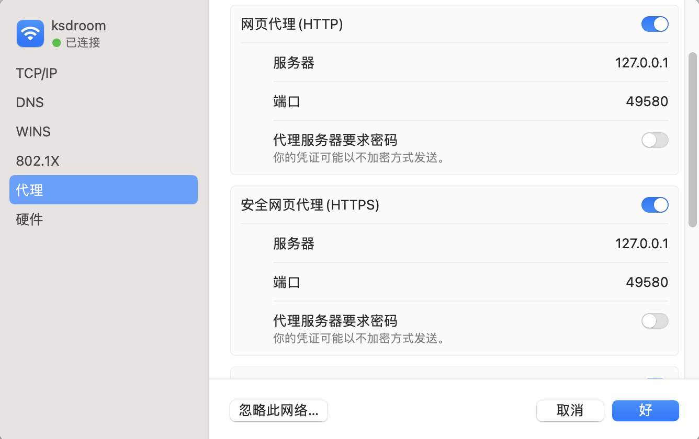
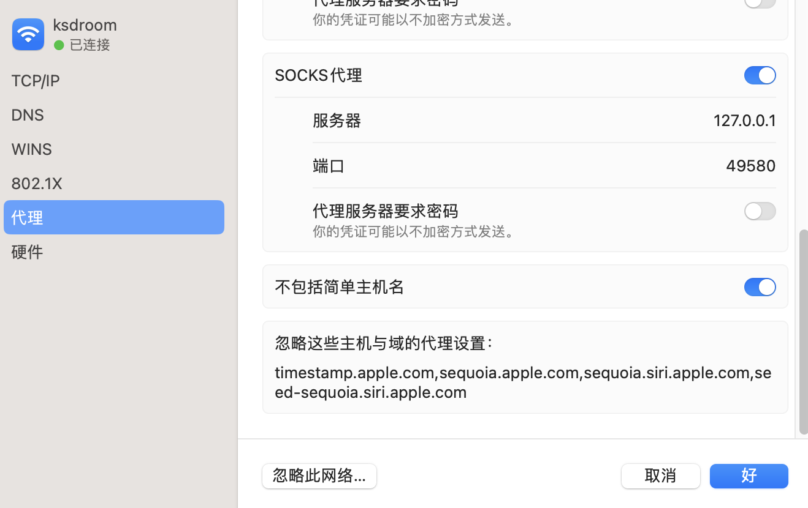

C𝜆ash 系统代理
archive time: 2023-11-07
还是有点麻烦啊，始终不能理解
最近由于 clash for windows 作者出事，导致 clash 全系列，包括相关的程序都删库或者存档了
不过目前看来，clash 本身还是可以用的，所以我自己还是在用
但是在 macOS 上，clash 的系统代理还是有不小的麻烦
因为 macOS 上有许多服务是需要联网的，而在系统代理的过程中就会有不小的影响
比较典型的，就是系统的 翻译 功能
解决方法也比较简单，那就是 bypass + tun
首先进入到系统设置，找到网络相关的地方，设置好 http 以及 https 代理

socks 我个人感觉不太需要，不过我还是勾选上了
然后就是勾选 不包括简单主机名，然后在下面 忽略这些主机与域的代理设置 中填入:
192.168.0.0/16,10.0.0.0/8,172.16.0.0/12,127.0.0.1,localhost,*.local,timestamp.apple.com,sequoia.apple.com,seed-sequoia.siri.apple.com
注意，不能换行，用逗号隔开，空格好像也不太行（？）

然后就可以正常使用代理以及系统功能了
不过我很不解的就是，为什么我在 Merge Profile 里使用 prepend-rules 没有效果
但是问题被解决就好